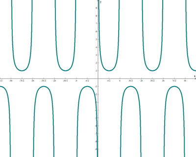

Números
Números Trascendentes
¿Qué es un número trascendente?
Un número trascendente es un número que no es un número algebraico (es decir, no es solución de ninguna ecuación polinómica con coeficientes racionales).
Casi todos los números reales son trascendentes. El argumento para verlo es:
Los números algebraicos son "numerables" (por decirlo simplemente, la lista de números enteros es "numerable", y puedes ordenar los números algebraicos para que vayan de par en par con los números enteros, así que también son numerables.)
Pero los números reales no son "numerables".
Y como cada número real es algebraico o trascendente, los trascendentes deben ser "no numerables".
Así que hay muchos más trascendentes que algebraicos.
Lo mismo es cierto para los números complejos
Funciones Trascendentes
Así como un número trascendente "no es algebraico", una función trascendente también es "no algebraica".
Más formalmente, una función trascendente es una función que no se puede construir en un número finito de pasos a partir de las funciones elementales y sus inversas
Un ejemplo de una función trascendente es la función seno sin(x), cos(x), a^x, log (x), sinh(x)...
En las funciones trascendentes la variable independiente figura como exponente, o como índice de la raíz, o se halla afectada del signo logaritmo o de cualquiera de los signos que emplea la trigonometría.
Función Exponencial
f(x)=a^x
Sea a un número real positivo. La función que a cada número real x le hace corresponder la potencia ax se llama función exponencial de base a y exponente x.

Función seno
f(x)=sen (x)

Función coseno
f(x)=cos (x)
Función tangente
f(x)=tan (x)

Función cosecante
f(x)=cosec (x)

Función secante
f(x)=sec (x)

Función cotangente
f(x)=cotan (x)

Información de:
- Referencia 1.
- Referencia 2https://www.superprof.es/diccionario/matematicas/calculo/funcion-trascendente.html